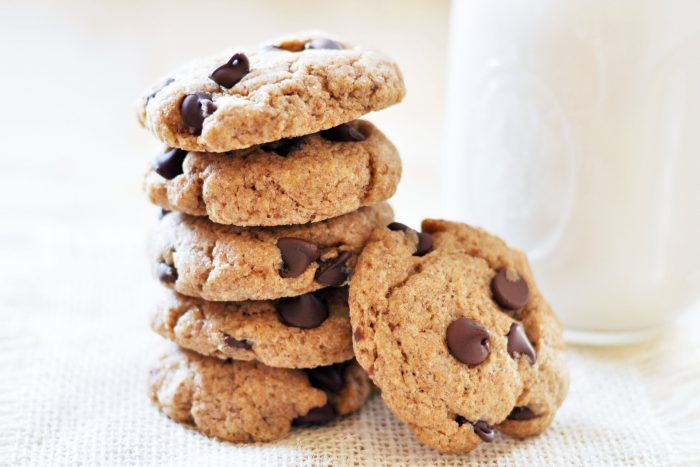

Classic Chocolate Chip Cookies
A timeless American favorite featuring a perfect balance of chewy centers and crisp edges. These cookies combine rich butter and brown sugar with generous amounts of semi-sweet chocolate chips for an irresistible treat that appeals to all ages.

Ingredients:
- 2¼ cups all-purpose flour
- 1 teaspoon baking soda
- 1 teaspoon salt
- 1 cup (2 sticks) unsalted butter, softened
- ¾ cup granulated sugar
- ¾ cup packed brown sugar
- 2 large eggs
- 2 teaspoons vanilla extract
- 2 cups semi-sweet chocolate chips
Instructions:
- Preheat oven to 375°F (190°C)
- In a small bowl, mix flour, baking soda, and salt
- In a large bowl, beat butter and sugars until creamy
- Add eggs one at a time, then vanilla
- Gradually mix in flour mixture
- Stir in chocolate chips
- Drop by rounded tablespoons onto ungreased baking sheets
- Bake for 9-11 minutes until golden brown
- Cool on baking sheets for 2 minutes, then transfer to wire racks
Home